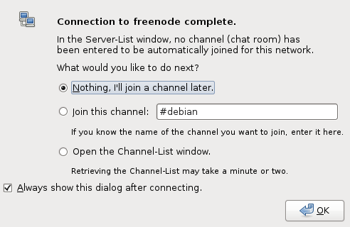
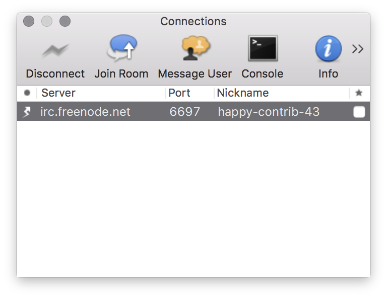

Setup IRC¶
Linux & Windows¶
Install an IRC Program¶
We will install an IRC program called Hexchat.
For a Linux distributions like Debian, Ubuntu, or Mint open a terminal and type:
sudo apt install hexchat
For a Linux distributions like Redhat, Fedora 21 or earlier, or CentOS open a terminal and type:
sudo yum install hexchat
For Fedora 22 or later open a terminal and type:
sudo dnf install hexchat
For Windows environment, download latest Hexchat installation binary from Hexchat download and install it. You will probably also need extra components shown just under Hexchat.
Now open the hexchat program just like you would for any Linux program.
Edit Nick Name Settings¶
- Lets first fill out the Nick name and User name field with our choice of a nickname:
- From the list of Networks you should see Freenode. Select that and click ‘edit’.
Edit Server Settings¶
- Click the edit button and
- Make sure that Use SSL for all the servers on this network is checked.
Troubleshooting¶
- If you get a notice that the nick name is already taken, quit and go back to the first set of steps to pick a different nickname.
Register Your Nick Name¶
If all goes well we should get a dialog window indicating the connection to freenode has completed, and what to do next.. For now we’ll select “Nothing, I’ll join a channel later.”
When you login to the server for the first time with your nickname, its being used by you, but it’s still not registered yet.
In order to register we need to send a message to nickserv on freenode, which is a bot that allows us to register and identify ourselves as the owner of a nick name.
Type the following to register your nick name with nickserv replacing mysecretpassword and test@domain.com with your own password and email address:
/msg nickserv register mysecretpassword test@domain.com
If all goes well you should receive a message back instantly that the nick name is registered by you and an activation email will be sent to the email address you provided.
Auto-Login On Connecting To Freenode¶
In order to identify ourselves that we own the nick name upon logging in, we need to tell Hexchat to communicate our password over upon connecting.
- Click Hexchat from the menu and then click Network List. We will see a familiar first screen of servers listed. Make sure freenode is highlighted and click edit.
- In the Password put in the password we picked in the previous step and click close.
Done¶
Congratulations you’re now ready to communicate with the OpenStack community and have a registered nick name on Freenode! From here on out when you connect to Freenode with Hexchat you will be identified with your nickname.
Mac OS¶
Install an IRC Program¶
We’ll install an IRC program called Colloquy.
- Go to http://colloquy.info and follow the download link.
- From your downloads folder, drag the Colloquy application icon to your applications folder to install.
Add A New Connection¶
- Lets first fill out the Nickname and User name field with our choice of a nickname:
- For the Chat server type in irc.freenode.net.
- For the Chat Server Port type in 6697 and check the SSL Connection box.
{kind=link}
If all goes well in the second window we should see our our new connection and our client connected.
{kind=link}
{kind=link}
Register Your Nick Name¶
If all goes well we should be connected and no pop ups as indicted in the previous step’s Troubleshooting section.
When you login to the server for the first time with your nickname, its being used by you, but it’s still not registered yet.
In order to register we need to send a message to nickserv on freenode, which is a bot that allows us to register and identify ourselves as the owner of a nick name.
Click the message user icon and type:
nickserv
A message dialog window will come up. Type the following to register your nick name with nickserv replacing mysecretpassword and test@domain.com with your own password and email address:
register mysecretpassword test@domain.com
{kind=link}
If all goes well you should receive a message back instantly that the nick name is registered by you and an activation email will be sent to the email address you provided.
Auto-Login On Connecting To Freenode¶
In order to identify ourselves that we own the nick name upon logging in, we need to tell Colloquy to communicate our password over upon connecting.
- Going back to your connection window, highlight your freenode connection and click the info icon.
- In the Password field type your password.
{kind=link}
Done¶
Congratulations you’re now ready to communicate with the OpenStack community and have a registered nick name on Freenode! From here on out when you connect to Freenode with Colloquy you will be identified with your nickname.

Except where otherwise noted, this document is licensed under Creative Commons Attribution 3.0 License. See all OpenStack Legal Documents.